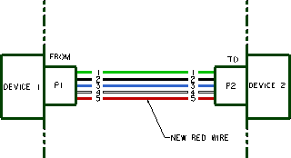

The Create Connection Wizard is used to create and edit connection data in the routing navigators. In this activity, you will manually define a new connection using the Create Connection Wizard.
The schematic below shows the devices, connectors, pins, and wires that have to be defined in the connection and component lists. You need to add a fifth connection for the new red wire.

In the connection navigator, right-click the HARNESS1 node and choose Connection→Create to open the Create Connection Wizard.
In the Wire ID box, type C5.
Make sure the Stock Type is set to Wire.
Click Next to advance to the From Component page.